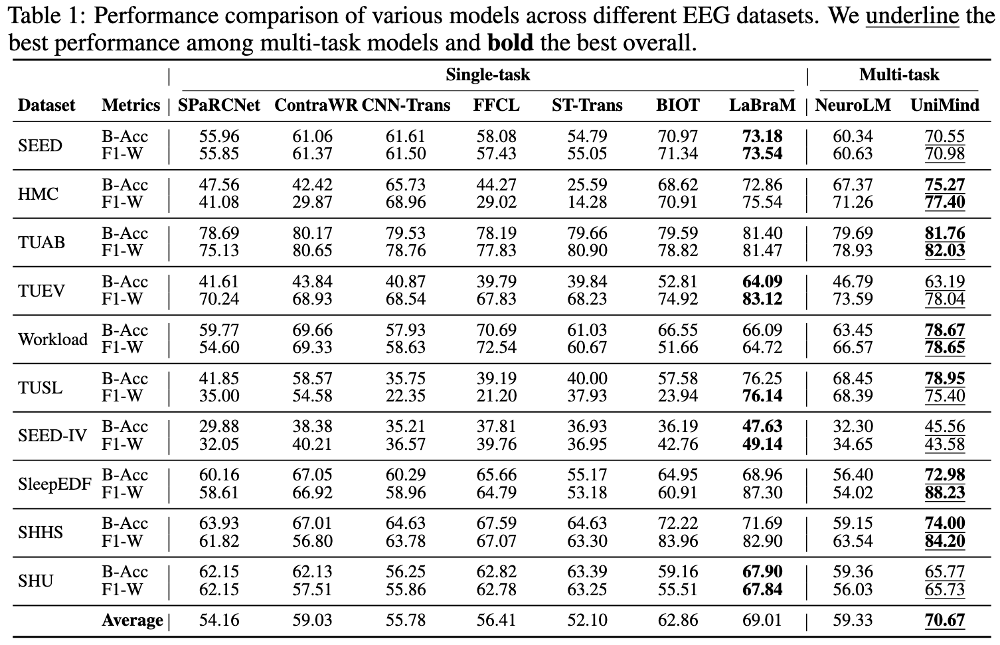

Decoding human brain activity from electroencephalography (EEG) signals is a central challenge for neuroscience and artificial intelligence, with applications in mental-state assessment, clinical monitoring, and human-machine interaction. Existing EEG foundation models often struggle with task heterogeneity and typically require task-specific tuning to achieve strong downstream performance. UniMind is a general-purpose EEG foundation model for unified multi-task brain decoding. It leverages large language models to comprehend complex neural patterns by aligning EEG representations with language-model hidden spaces. The model introduces a Neuro-Language Connector to bridge the neural-language modality gap and a Task-aware Query Selection module to dynamically generate task-adaptive query tokens for heterogeneous EEG tasks. Across ten public EEG datasets covering five brain-decoding domains, UniMind achieves strong multi-task decoding performance and provides neuroscientific insights into functional correlations across tasks through query-selection visualizations.
UniMind integrates an EEG encoder, a dual-branch Neuro-Language Connector, a Task-aware Query Selection module, and a frozen LLM.
Performance comparison across EEG datasets. Underlined values are the best among multi-task models, and bold values are the best overall.

Task-aware query selection can also be used as an analysis tool for discovering functional correlations among EEG tasks.
Similar decoding tasks tend to select similar query patterns, suggesting reusable neural mechanisms across related datasets.
Task-adaptive routing promotes transfer across compatible tasks while reducing interference from heterogeneous task formats.
Query-selection statistics provide an interpretable window into how a unified model organizes neural functions across tasks.
@article{lu2025unimind,
title = {UniMind: Unleashing the Power of LLMs for Unified Multi-Task Brain Decoding},
author = {Lu, Weiheng and Song, Chunfeng and Wu, Jiamin and Zhu, Pengyu and Zhou, Yuchen and Mai, Weijian and Zheng, Qihao and Ouyang, Wanli},
journal = {arXiv preprint arXiv:2506.18962},
year = {2025},
url = {https://arxiv.org/abs/2506.18962}
}